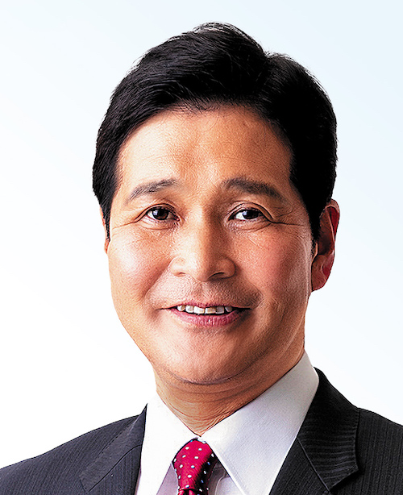

熊本県知事選候補者選び
診断テスト

幸山政史候補
木村敬候補
この診断は、熊本県知事選2024に立候補している
幸山政史候補者("オール県民党")
と
木村敬候補者(自民公明推薦)
の政治姿勢を、あなたの診断回答を参考に、どちらの候補者あなたがより共感するかを診断します。以下の質問に答えていただき、最後に診断結果を見てみましょう。
診断の質問は、AIで分析両候補者の公約や政治姿勢を読み解き、争点を洗い出しました。それに基づき、質問と回答はAIが作成をしています。
同意事項
この診断を始める前に、以下の同意事項をお読みください。
この診断は、あくまで参考程度にしてください。
この診断は、あなたの回答に基づいて作成されています。
診断結果情報は、選挙情勢を知るための参考情報として、公開されます。
あなたの回答は、匿名で集計されます。
同意する
使い方
やり直したい場合は、ページを再読み込みしてください。
回答が少ない場合、診断が難しくなることがあります。
診断の回数は、1回のみです。
次へ